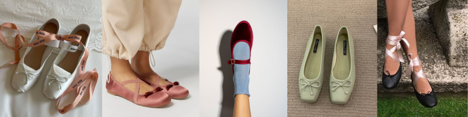

The history of ballet flats is a journey that spans centuries, evolving from their origins in the world of dance to becoming an iconic fashion staple. These comfortable and versatile shoes were first introduced in the early 19th century as a response to the rigid and constricting footwear of the time. Marie Antoinette is often credited with popularizing the flat shoe style when she requested a more flexible and comfortable alternative to her traditional court heels. Her penchant for these soft, slip-on shoes during her time at the French court set the stage for the enduring appeal of ballet flats.
Throughout the 20th century, ballet flats continued to gain popularity, especially among women looking for chic and practical footwear. Iconic figures like Audrey Hepburn showcased the timeless elegance of ballet flats in the 1950s, wearing them in films like "Funny Face" and "Roman Holiday." Designers began to experiment with materials, colors, and embellishments, transforming the simple ballet flat into a fashionable accessory. Today, ballet flats remain a classic choice for those seeking both comfort and style, and they have become a versatile wardrobe staple that complements a wide range of outfits, from casual to formal.

In the 21st century, ballet flats have undergone further reinvention, with designers incorporating modern elements while preserving their timeless charm. From luxurious leather versions by renowned fashion houses to sustainable and cruelty-free options, ballet flats continue to adapt to the needs and tastes of contemporary consumers. This enduring footwear style serves as a testament to the enduring power of comfort, simplicity, and elegance in the world of fashion.